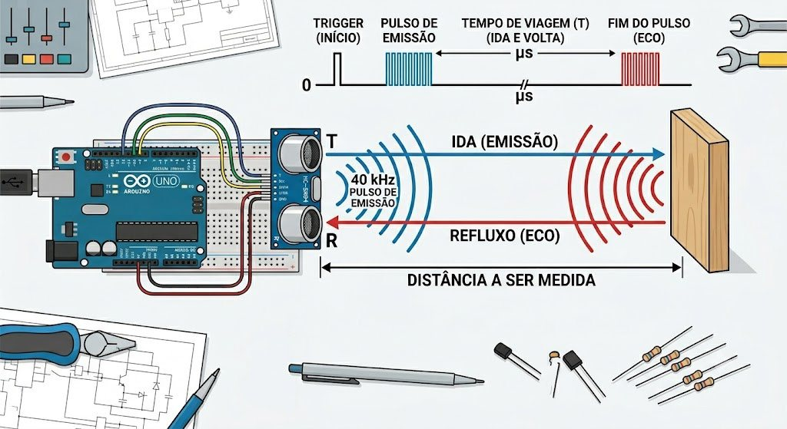
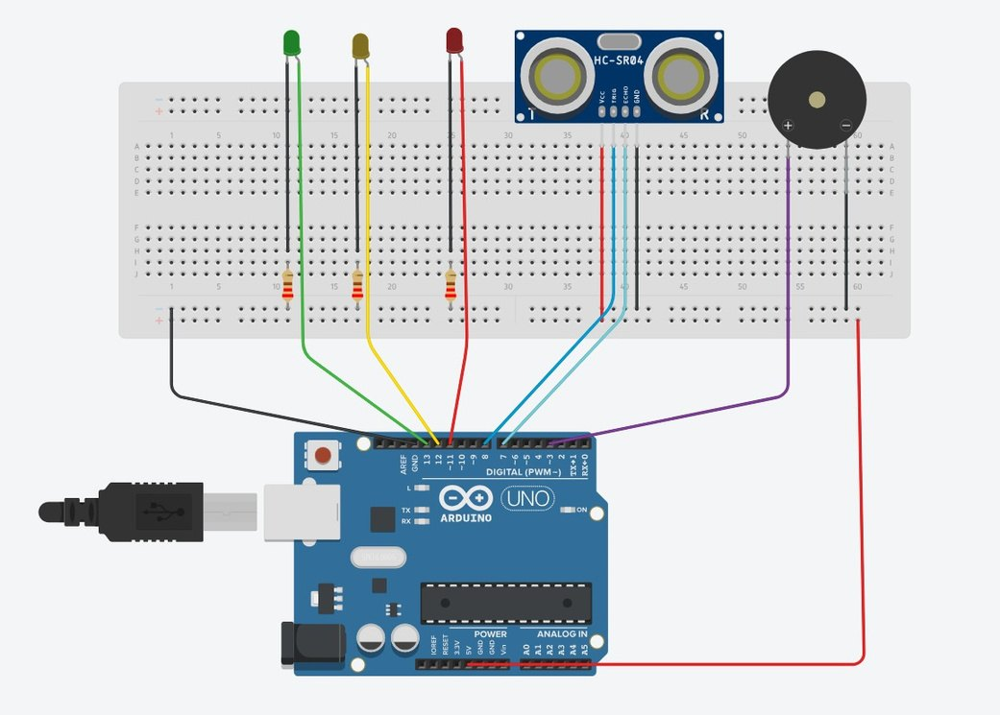

Sensor de Proximidade
Um Arduino mede quanto tempo o eco demora a voltar e transforma esse tempo em luz e som.
O sistema combina um Arduino Uno e o sensor ultrassônico HC-SR04 para monitorar a distância até um obstáculo. Em pequena escala, reproduz o princípio dos sensores de estacionamento dos carros.
- Tempo do eco
- 1399 µs
- Conta feita pelo Arduino
- D = (0,0343 × 1399) / 2
- LED verde21 cm ou mais
- LED amarelo11 a 20 cm
- LED vermelho e buzzeraté 10 cm
Como o eco vira distância
O transdutor do sensor usa o efeito piezoelétrico: cristais especiais convertem pulsos elétricos em vibração mecânica (o som) e, no caminho inverso, transformam o eco que volta em sinal elétrico que o Arduino consegue processar.
-
Disparo
O Arduino envia um sinal de 10 microssegundos ao pino Trigger e manda o sensor iniciar a leitura.
-
Emissão sonora
O sensor lança uma rajada rápida de ultrassom de 40 kHz no ar.
-
Início da cronometragem
No instante da emissão, o pino Echo sobe para nível alto (5 V) e o Arduino começa a contar o tempo com
pulseIn(). -
Reflexão
A onda viaja, encontra o obstáculo e volta em direção ao sensor.
-
Fim da cronometragem
Quando o receptor detecta o som de volta, o Echo cai para nível baixo (0 V) e o cronômetro para.
-
Cálculo
O microcontrolador multiplica o tempo de ida e volta pela velocidade do som e divide por dois.

D = (v × t) / 2
v ≈ 343 m/s no ar a 20 °C. t é o tempo de ida e volta. Dividimos por dois porque o som percorre o caminho duas vezes, e só a ida até o objeto interessa.
Em funcionamento
O circuito foi montado em protoboard, sem solda. No primeiro vídeo ele vai em cima de um carrinho de brinquedo. No segundo, a bancada mostra os LEDs mudando enquanto o Serial Monitor imprime as leituras.
Hardware e código
| Componente | Função | Pino |
|---|---|---|
| Arduino Uno R3 | Processa os dados e controla o sistema. | – |
| Sensor HC-SR04 | Mede a distância emitindo e recebendo ultrassom. | Trigger D7 Echo D8 |
| LED verde | Obstáculo longe, 21 cm ou mais. | D13 |
| LED amarelo | Obstáculo a 11 até 20 cm. | D12 |
| LED vermelho | Obstáculo a até 10 cm. | D11 |
| Buzzer | Alerta sonoro junto do LED vermelho. | D2 |
| Protoboard e resistores | Montagem e organização do circuito. | – |

Sketch do Arduino
O código lê o tempo do eco, converte em centímetros e liga um alerta por faixa. A leitura é arredondada para baixo em int leitura_cm.
#include <Ultrasonic.h>
#define pino_trigger 7
#define pino_echo 8
int led_verde = 13;
int led_amarelo = 12;
int led_vermelho = 11;
int buzzer = 2;
Ultrasonic ultrasonic(pino_trigger, pino_echo);
void setup()
{
pinMode(led_verde, OUTPUT);
pinMode(led_amarelo, OUTPUT);
pinMode(led_vermelho, OUTPUT);
pinMode(buzzer, OUTPUT);
Serial.begin(9600);
Serial.println("Inicializando a leitura do sensor ultrassônico HC-SR04...");
}
void loop()
{
float cm, pol;
long tempo = ultrasonic.timing();
cm = ultrasonic.convert(tempo, Ultrasonic::CM);
Serial.print("Distancia em cm --> ");
Serial.print(cm);
delay(1000);
int leitura_cm = cm;
if (leitura_cm <= 10)
{
digitalWrite(buzzer, HIGH);
digitalWrite(led_vermelho, HIGH);
digitalWrite(led_verde, LOW);
digitalWrite(led_amarelo, LOW);
}
if (leitura_cm >= 11)
{
digitalWrite(led_amarelo, HIGH);
digitalWrite(led_verde, LOW);
digitalWrite(led_vermelho, LOW);
digitalWrite(buzzer, LOW);
}
if (leitura_cm >= 21)
{
digitalWrite(led_verde, HIGH);
digitalWrite(led_amarelo, LOW);
digitalWrite(led_vermelho, LOW);
digitalWrite(buzzer, LOW);
}
}Montagem e testes
A montagem em protoboard permite conectar os componentes sem soldagem. Nessa etapa testamos a precisão das medições e o funcionamento dos alertas visuais e sonoros.
Durante os experimentos, superfícies inclinadas ou irregulares causaram pequenas variações na leitura, por causa da forma como refletem as ondas ultrassônicas. Mesmo assim, o sistema deu resultados consistentes e atendeu aos objetivos do projeto.
Onde mais se usa
O protótipo usa o mesmo princípio físico dos sensores de estacionamento dos automóveis. Sensores ultrassônicos também aparecem em:
- medição de nível em reservatórios e tanques industriais;
- navegação e prevenção de colisões em robôs móveis;
- detecção de obstáculos em drones;
- sistemas de automação e monitoramento.
Do problema ao protótipo
O projeto nasceu na disciplina de Prática Profissional, com o desafio de unir eletrônica, programação e Física em um sistema que funcione de verdade.
-
Proposta
Desenvolver um sistema de monitoramento de distância em tempo real, usando um sensor ultrassônico integrado a um Arduino, e mostrar a engenharia no cotidiano.
-
Pesquisa
Estudo do ultrassom e do datasheet do HC-SR04, com apoio do manual do projeto e de Fundamentos de Física. As consultas foram feitas em maio de 2026.
-
Montagem
Circuito em protoboard com Arduino Uno, sensor, três LEDs, resistores e buzzer, desenhado antes em esquema e depois montado na bancada.
-
Testes
Ajuste das faixas de alerta e conferência das leituras no Serial Monitor, inclusive com superfícies inclinadas.
-
Feira de Projetos
Apresentação do protótipo na Feira de Projetos das Engenharias, edição 2026.2, com o tema USF 50 anos: Engenharias em ação, Ideias em transformação.
Equipe
Seis estudantes de Engenharia da Computação da USF.
- Leonardo M. KobayashiRA 202600591
- Lucas Hasmann TavaresRA 202602575
- Matheus Silva OliveiraRA 202610366
- João Gabriel Dias ReisRA 202630561
- Gustavo Maiolli TurelaRA 202605549
- Thieder Augusto CassalhoRA 202609737
Perguntas frequentes
Respostas curtas sobre como o protótipo mede e avisa.
Como o sensor sabe a que distância está o obstáculo?
Ele emite ultrassom e mede quanto tempo o eco leva para voltar. Com esse tempo e a velocidade do som, o Arduino calcula a distância com D = (v × t) / 2.
Por que a conta divide por dois?
O tempo medido é de ida e volta. Como a distância até o objeto é só a ida, o resultado é dividido por dois.
Por que usar 343 m/s?
É a velocidade aproximada do som no ar a 20 °C. Com temperatura diferente o valor muda um pouco, e a leitura muda junto.
O que cada cor de LED significa?
Verde: obstáculo a 21 cm ou mais. Amarelo: de 11 a 20 cm. Vermelho: até 10 cm, e nesse caso o buzzer também apita.
A leitura é sempre exata?
Quase sempre. Em superfícies inclinadas ou irregulares, o eco reflete de um jeito diferente e a leitura pode variar um pouco. Nos nossos testes os resultados foram consistentes.
Para que serve esse tipo de sistema?
Para dar segurança em manobras de estacionamento, e também em robôs, drones, tanques industriais e sistemas de automação.